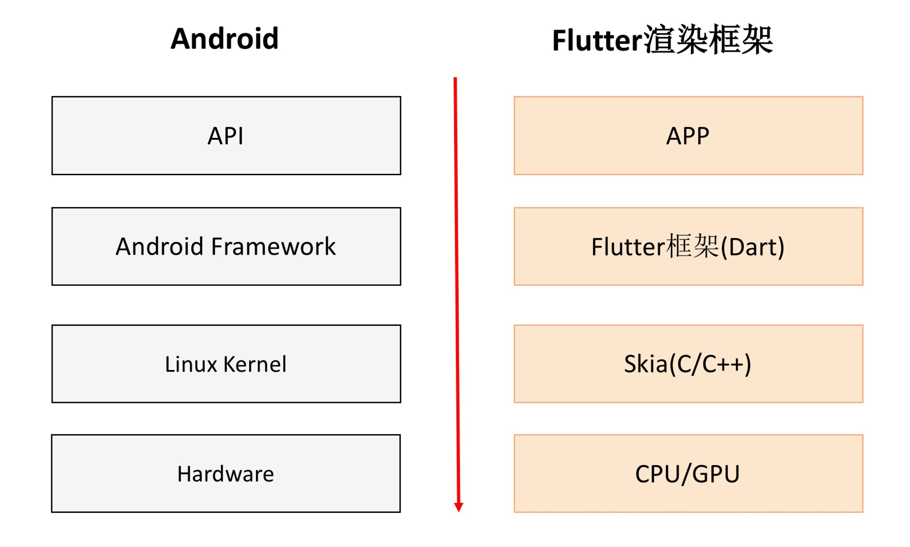
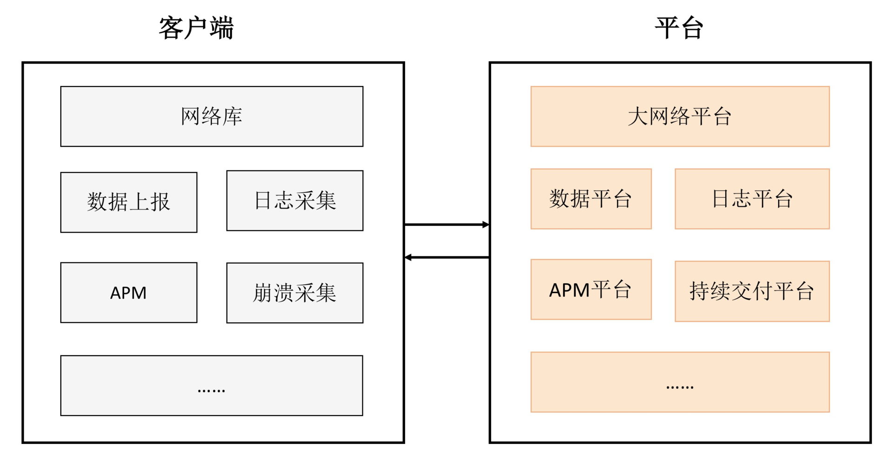
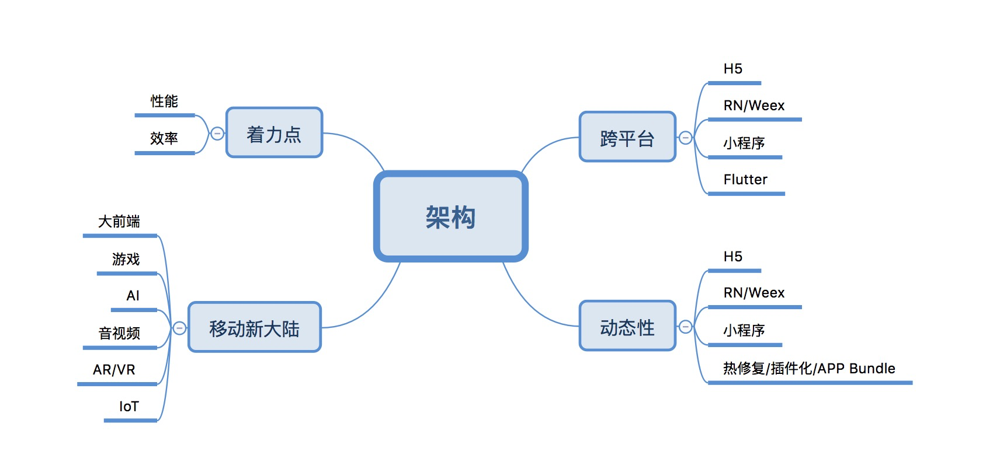

- 00 导读 如何打造高质量的应用？.md
- 00 开篇词 焦虑的移动开发者该如何破局？.md
- 01 崩溃优化（上）：关于“崩溃”那些事儿.md
- 02 崩溃优化（下）：应用崩溃了，你应该如何去分析？.md
- 03 内存优化（上）：4GB内存时代，再谈内存优化.md
- 04 内存优化（下）：内存优化这件事，应该从哪里着手？.md
- 05 卡顿优化（上）：你要掌握的卡顿分析方法.md
- 06 卡顿优化（下）：如何监控应用卡顿？.md
- 06补充篇 卡顿优化：卡顿现场与卡顿分析.md
- 07 启动优化（上）：从启动过程看启动速度优化.md
- 08 启动优化（下）：优化启动速度的进阶方法.md
- 09 I_O优化（上）：开发工程师必备的I_O优化知识.md
- 10 I_O优化（中）：不同I_O方式的使用场景是什么？.md
- 11 I_O优化（下）：如何监控线上I_O操作？.md
- 12 存储优化（上）：常见的数据存储方法有哪些？.md
- 13 存储优化（中）：如何优化数据存储？.md
- 14 存储优化（下）：数据库SQLite的使用和优化.md
- 15 网络优化（上）：移动开发工程师必备的网络优化知识.md
- 16 网络优化（中）：复杂多变的移动网络该如何优化？.md
- 17 网络优化（下）：大数据下网络该如何监控？.md
- 18 耗电优化（上）：从电量优化的演进看耗电分析.md
- 19 耗电优化（下）：耗电的优化方法与线上监控.md
- 20 UI 优化（上）：UI 渲染的几个关键概念.md
- 21 UI 优化（下）：如何优化 UI 渲染？.md
- 22 包体积优化（上）：如何减少安装包大小？.md
- 23 包体积优化（下）：资源优化的进阶实践.md
- 24 想成为Android高手，你需要先搞定这三个问题.md
- 25 如何提升组织与个人的研发效能？.md
- 26 关于编译，你需要了解什么？.md
- 27 编译插桩的三种方法：AspectJ、ASM、ReDex.md
- 28 大数据与AI，如何高效地测试？.md
- 29 从每月到每天，如何给版本发布提速？.md
- 30 数据评估（上）：如何实现高可用的上报组件？.md
- 31 数据评估（下）：什么是大数据平台？.md
- 32 线上疑难问题该如何排查和跟踪？.md
- 33 做一名有高度的移动开发工程师.md
- 34 聊聊重构：优秀的架构都是演进而来的.md
- 35 Native Hook 技术，天使还是魔鬼？.md
- 36 跨平台开发的现状与应用.md
- 37 移动开发新大陆：工作三年半，移动开发转型手游开发.md
- 38 移动开发新大陆：Android音视频开发.md
- 39 移动开发新大陆： 边缘智能计算的趋势.md
- 40 动态化实践，如何选择适合自己的方案？.md
- 41 聊聊Flutter，面对层出不穷的新技术该如何跟进？.md
- 42 Android开发高手课学习心得.md
- Android JVM TI机制详解（内含福利彩蛋）.md
- Android工程师的“面试指南”.md
- Native下如何获取调用栈？.md
- 专栏学得苦？可能你还需要一份配套学习书单.md
- 专栏学得苦？可能是方法没找对.md
- 程序员修炼之路 设计能力的提升途径.md
- 练习Sample跑起来 ASM插桩强化练习.md
- 练习Sample跑起来 唯鹿同学的练习手记 第1辑.md
- 练习Sample跑起来 唯鹿同学的练习手记 第2辑.md
- 练习Sample跑起来 唯鹿同学的练习手记 第3辑.md
- 练习Sample跑起来 热点问题答疑第1期.md
- 练习Sample跑起来 热点问题答疑第2期.md
- 练习Sample跑起来 热点问题答疑第3期.md
- 练习Sample跑起来 热点问题答疑第4期.md
- 结束语 移动开发的今天和明天.md
- 聊聊Framework的学习方法.md
结束语 移动开发的今天和明天
不知不觉，“Android开发高手课”上线更新到现在，已经陪伴了大家140多天，转眼间到了不得不说“再见”的时候。回想半年前开始筹备这个专栏时，当时焦虑和浮躁是移动开发者比较普遍的心态，而作为移动开发者的一份子，希望通过这个专栏可以分享一些我的经验，帮你克服焦虑，拥抱未来无限可能。
我的专栏希望通过质量、效率以及架构三个角度来说明一个移动开发高手应该具备的特质。“高质量开发”模块，希望让你知道Android开发并不是那么简单，一个Android高手需要具备从上层到底层的“通关”能力。Flutter就是一个非常好的例子，这里建议你回顾一下《想成为Android高手，你需要搞定这三个问题》。

稳定性、内存、网络、渲染、I/O…你可以选择其中一两个点深入往底层走走，打造自身的技术壁垒，当团队内部如果遇到相关问题（比如虚拟机、渲染、数据库）的时候，第一时间就会想到你来解决。
而“高效开发”模块希望告诉你一个开发高手不仅仅有“深度”，还需要有“广度”。移动开发早已经过了“单兵作战”的年代了，服务化、前后端一体化越来越重要，这里也推荐你回顾一下《做一名有高度的移动开发工程师》。

这里要求我们学会跳出客户端的范畴，具备全链路优化的思维。一个真正的开发高手应该不仅能把性能优化多少倍，而且还能带动整个团队提升开发效率。
最后一个模块是“架构演进”，我希望告诉你架构是为性能和效率服务的。无论是H5、React Native/Weex、小程序、Flutter，还是类似游戏、音视频、AI这些移动开发“新大陆”，它们都是殊途同归。

对于移动开发的今日，在学完专栏以后，我希望你能体会到下面这两点：
移动开发并不简单。想成为一名移动开发高手并不简单，它需要非常深入地学习。当然学完专栏几十篇文章，你也不可能立刻就成为了一名高手，俗话说“师傅领进门，修行靠个人”，在专栏以外你还需要进一步深入学习更多的知识，积累更丰富的经验。
移动开发生命力依然顽强。移动开发很有前途，而且这个领域不仅局限于Android开发。我们的出路其实有很多很多，只要我们肯拿出折腾Android的热情，用从上到下“通关”的钻研精神，无论是转向iOS，还是游戏、前端等其他的领域，我相信绝对都是“降维打击”。
但是不可否认，如今的移动开发已经不再是“风口上的猪”，对于初级移动开发者的岗位越来越少，大厂的要求也随之变得越来越严格。类似微信、头条、阿里，他们都对候选人在算法和底层基础知识考究得非常深入。
但是我相信只要你认真学习完这个专栏，对面试大厂会有非常大的帮助。专栏里提到的很多知识点，目前其实很多大厂也还做得不够完善。正如前面所说，你可以找其中一两个点作为进入大厂的突破口。
而对于Android的未来，个人认为会有下面两个变化：
合规和用户隐私越发重要。无论被称为史上最严厉的欧盟GDPR法令，还是Android Q用户唯一标识、权限等最新限制，都可以清楚看到未来对用户隐私和权限更严格限制的趋势。
中国的声音会越来越大。以往我们总说Copy to China，现在更多的是Copy from China。无论是Google还是苹果，都无法忽视我们13亿人的巨大市场。比如说Android Q就为了中国的热修复框架，专门提供新的接口。
对于移动开发的未来，可能未来的新设备将颠覆手机，也许是嵌入式设备、智能眼镜、车载设备等，但这些设备仍然还是移动设备。从当下的技术发展来看，我很期待今年的Facebook F8和Google I/O大会（我今年也会去现场观摩，欢迎面基～），Facebook今年计划开源很多好东西，例如React Native新版本、启动优化测量等。
“三星凉了，宝洁药丸，诺基亚衰落，苹果下凡，国外品牌都挺惨…”，但现实情况却是三星依然在全球称霸。在我看来，“Android开发要完，移动开发要完”也是这个道理。我们不应该焦虑，也不需要浮躁，没有不过时的技术，不过时的只有学习能力和态度。
“唯有学习，不可辜负”。Android开发的路很长也很宽，我们既可以往底层走，也能往大中台走，还可以去看看IoT、游戏、AI。未来的机会还有很多很多，只要我们找准方向，积极拥抱变化、迎接挑战，每个人都可以走出一条自己的“光明大道”。
不过在工作学习之余，我也奉劝各位同学一定要锻炼好身体，无论什么时候身体都是第一位。我们的职业生涯非常漫长，脑力、体力、心力三者缺一不可。
非常感谢订阅专栏和我一路走来的同学们，因为你们的鼓励让我充满激情，驱使我呈现出最好的内容。最后祝愿你们未来无论是从事哪方面的工作，都能成为一名真正的高手。
到了说再见的时候了，各位潜水的同学都来冒个泡吧，我希望听听你这几个月学习的心得和收获，自己在工作和生活有什么变化，2019年的Flag完成得如何了？我们可以在专栏里畅所欲言、把酒言欢。
© 2019 - 2023 Liangliang Lee. Powered by gin and hexo-theme-book.